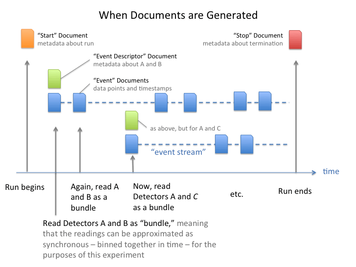

We have implemented a next-generation event-based data collection and analysis toolchain. The event-based data model supports complex, asynchronous data collection and enables sophisticated live, prompt, streaming, and post-facto data analysis.
The data model is composed of four types of Documents. Each document class has a defined, but flexible, schema. Examples are sketched below, and the precise specifications are also available. The documents themselves are mappings. We commonly represent them in JSON, as mongoDB documents, or as Python dictionaries.
All of the software can be understood as tools to generate, move, and process these documents.
The scope of a “run” is left to the beamline or individual scientist. It is quite generic: a set of Documents generated by following a given sequence of instructions. This might encompass a single short measurement (say, a “a count”) or a multi-step procedure such as a raster scan. A run should represent a set of individual measurements that will be collected or processed together.
Each run generates four types of Documents, as illustrated above.
Start: At the beginning of a run, a Document is generated with open-ended metadata (user name, sample information) and in general any information that is known from the start.
{'beamline_id': 'example',
'group': 'DAMA',
'owner': 'dallan',
'mood': 'optimistic',
'sample': {'kind': 'A', 'protocol': 'B'},
'plan_type': 'AbsScan',
'plan_args': {'detectors': '[det]',
'motor': 'EpicsMotor(...)',
'num': '16',
'start': '-3',
'stop': '3'},
'scan_id': 282,
'time': 1442521005.6099606,
'uid': '8288a9a7-c531-4ef4-966b-8c6d85d5eab4',
..., // any other user-specified fields
}
Event: Each event is a single “data point,” which may contain several readings taken “at the same time” – the meaning of which depends on the scientific context.
{'data': {'temperature': 5.0, 'position': 3.0},
'timestamps': {'temperature': 1442521007.9258342, 'position': 1442521007.5029348}
'time': 1442521007.3438923,
'uid': ...,
'descriptor': ..., // uid pointing to a Descriptor Document
}
Descriptor: Each sequence of Events has an Event Descriptor with information about what data is in the Events, such as the names, types, shapes and hardware sources of each of the measurements. The Descriptor documents can also contain configuration details about the hardware, such as exposure time.
{'data_keys':
{'temperature': {'source': 'PV:...', 'dtype': 'number', 'precision': 2, 'units': 'K'},
'position': {'source': 'PV:...', 'dtype': 'number': 'precision': 3, 'units': 'cm'}},
'configuration': {...},
'time': ...,
'uid': ...,
'start': ..., // uid pointing to a Start Document
..., // any other user-defined fields
}
Stop: At the end of a run, a Document is generated with information that is only known at the end – such as whether the run terminated due to some failure.
{'exit_status': 'success',
'time': ...,
'uid': ...,
'start': ..., // uid pointing to a Start Document
..., // any other user-defined fields
}
The precise schemas for these documents are provided as jsonschema documents in this repository.